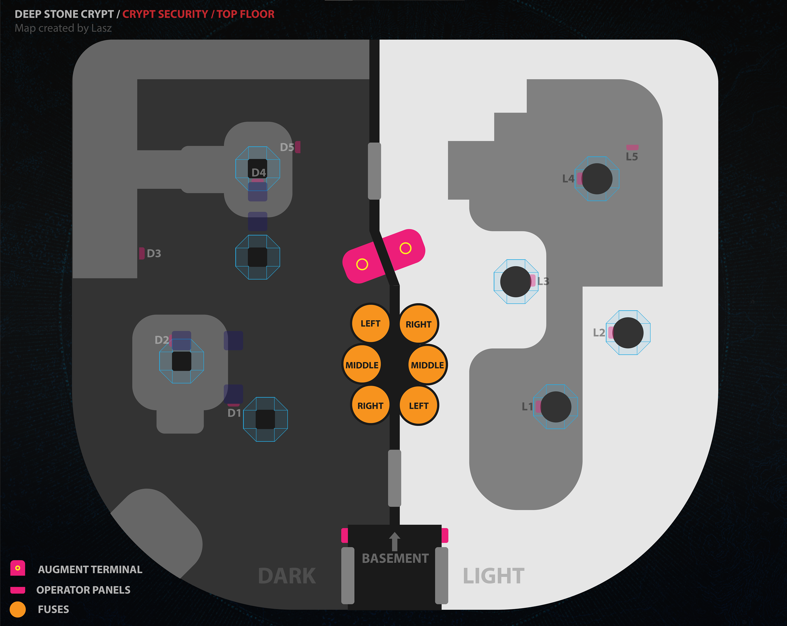
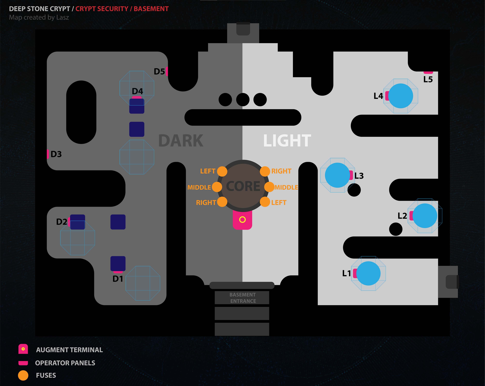
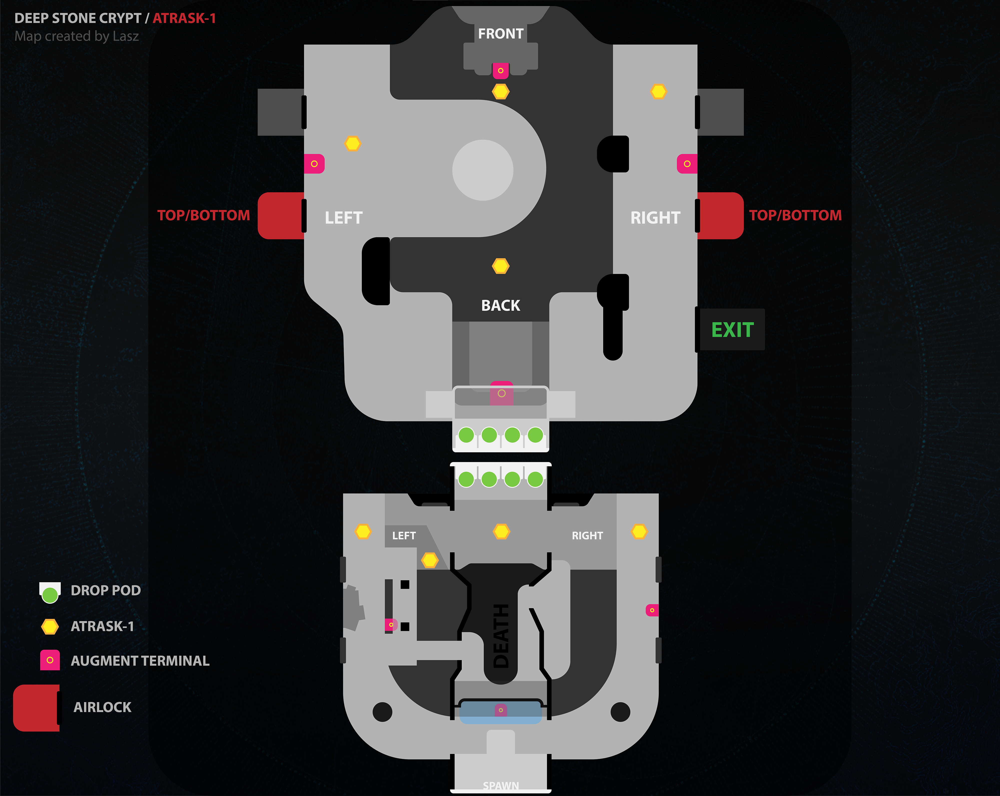
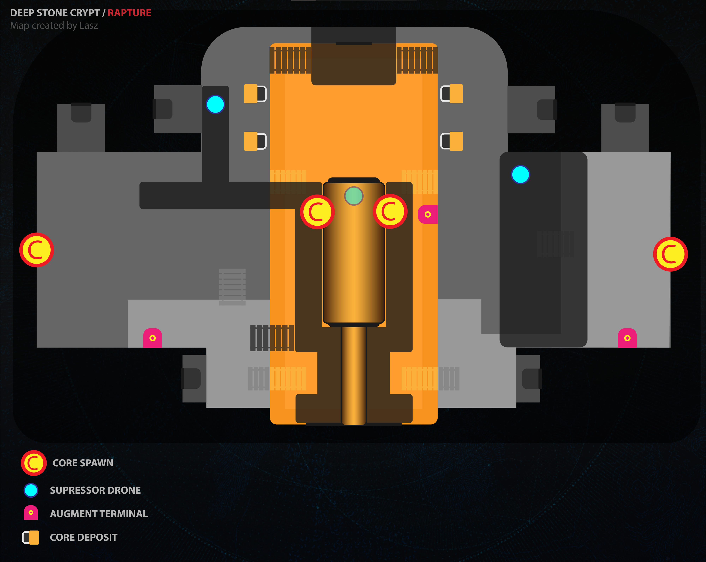
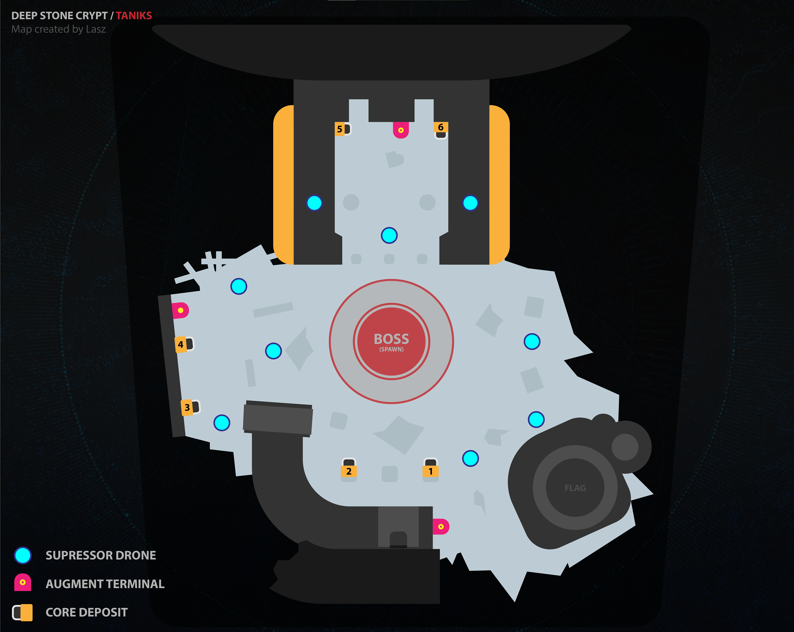

1. 보안 우회


주요 공략
스캐너는 1층에서 지하의 조작 패널 확인, 조작자는 페이즈별로 검/흰 나누어 내려가 스캐너가 불러준 패널 터치.
총 4개의 패널 터치 후 딜페이즈 시작, 중앙의 퓨즈 6개를 차단하면 끝
2. 아트락스-1

주요 공략
스캐너, 조작 모두 획득 후 우주 층에서 스캐너로 진짜 파악 후 처리, 지구로 반납하고 지구 스캐너가 받아서
딜하는 것 반복 (페이즈별 아트락스 디버프는 바로 받아서 우주 조작자에게 제거 요청)
3. 강하 생존

주요 공략
사실상 2넴에서 빠진 체력 복구하는 네임드로 각 인원이 스캐너, 조작, 억압으로 나뉘어 증강 디버프만 확인하고
구슬 잘 넣어주면 끝. 스캐너는 잘 봐주면 되고 원자핵을 넣기 위해서 억업자는 각 드론(그림상 파란색)아래에서 타릭스를
한대씩 쳐서 타릭스가 기절하고 증강 비활성화를 만들어 줘야 함(조작자는 구슬 개수 조절에 신경 쓸 필요 있음)
4. 괴인 타닉스 처치

주요 공략
각 인원이 조작, 억압, 스캐너로 나뉘어 그림상 1,2번 지역에 조작팀이가고 3,4번 지역에 스캐너 그리고 5,6번 지역에
억압팀이 가서 각 지역에 나오는 잡몹을 잡으며 버프 획득.
스캐너팀은 빠르게 원자 핵 상자 브리핑 후 상자가 없는 지역으로 빠르게 이동해야 함
(예: 상자가 1,3에 나왔다면 타닉스는 반드시 5,6번 지역으로 감.)
타닉스가 이동하면 앞 다리 부터 제거해 원자핵을 빠르게 제거, 이후 떨어지는 즉사 스킬을 피하면서 스캐너가 불러준 상자에 원자핵
넣고 다시 동일하게 한번 더 진행 딜페이즈로 돌입.